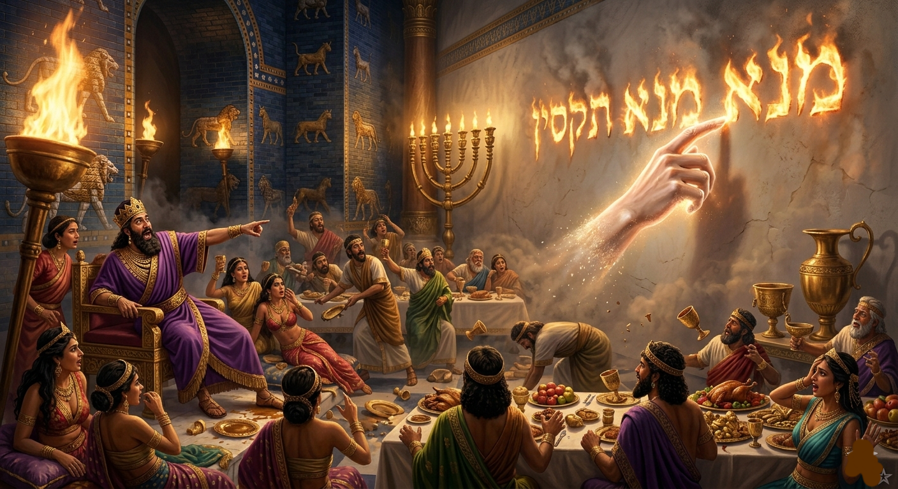

MEU AMIGO ANJO
CAPÍTULO 20
539 a.C.
Babilônia
— Não consigo enrolar isso, Seneb! Não sei por que Zoravar inventa essas coisas! — grunhiu Nakht, em um egípcio nativo, voltado a Seneb.
— “Isso” é nosso uniforme de gala! Temos que usar. E Zoravar não gosta que falemos nesse linguajar perto dele — retrucou Seneb entre os dentes, lutando com as dobras de um linho impecável.
Ao que Nakht respondeu, impaciente:
— Mas nosso senhor nem irá à festa. Por que temos que ir uniformizados como pavões do deserto?
— ir m-ek, m rwi, Nakht! — A voz de Zoravar invadiu o aposento vinda do outro cômodo, firme e carregada de uma autoridade que fez o ar vibrar.
Nakht e Seneb arregalaram os olhos, olhando um para o outro em choque. O silêncio que se seguiu foi quebrado apenas pelo som dos passos rítmicos do mordomo-mor se aproximando.
— Como... como o senhor aprendeu a falar esse egípcio? — balbuciou Nakht, ainda segurando a faixa da cintura.
— Andei tendo umas instruções aos pés de meu amo — respondeu Zoravar, cruzando o limiar com a postura de um general. — Agora, chega de resmungarem como meninas de desmame. Já estamos atrasados. Passem em meus aposentos que borrifarei nos resmungões o mais cheiroso perfume da Arábia!
Horas mais tarde, Zoravar, Seneb, Nakht e mais oito funcionários da confiança de Beltessazar estavam posicionados no Palácio Sul. O Grande Salão de Banquetes era uma visão de excessos: as paredes revestidas de azulejos azuis e relevos de leões dourados pareciam pulsar sob a luz de mil tochas. O aroma de carne assada, mirra e vinho fermentado era quase inebriante.
Zoravar, mantendo a vigilância silenciosa que sua posição exigia, notou que o rei Belsazar estava em um estado de alegria perigosa.
As taças de vinho eram servidas de forma ininterrupta, e o monarca, rodeado pelos altos membros da corte, concubinas e dignatários estrangeiros, ria com uma autoconfiança que beirava o delírio.
Lá pelas tantas, o rei levantou-se de suas almofadas de seda, cambaleando levemente. Sua voz, engrossada pela bebida, cortou a música das harpas:
— Wardu sha sharri!! Wardu! Wardu!
Os servos reais correram em sua direção.
Belsazar estendeu o braço, apontando para o vazio com um olhar desafiador, e ordenou em um aramaico imperial que ecoou pelas colunas:
— Zel l’bet-ginza, we-ayte li yat kassay dahaba di aytyu min Yerushalem. Kolla! Ayte li. Nishte!
Zoravar quase se levantou num impulso, o coração batendo contra as costelas como um martelo. Ele conteve-se a tempo, lembrando-se de que quem falava era a maior autoridade da terra, mas suas mãos fecharam-se em punho sob a mesa.
Seneb, percebendo a mudança drástica na postura do amigo, cochichou com urgência:
— O que o rei disse? O que ele disse, Zoravar?
Zoravar voltou a relaxar o corpo devagar, embora seus olhos permanecessem fixos no estrado real. Ele traduziu o caldeu trôpego do monarca com a voz carregada de um pressentimento sombrio:
— Ele pediu ao mordomo-mor as taças de ouro que foram trazidas do Sagrado Templo dos judeus.
— Não é de lá que nosso amo veio? — perguntou Nakht, com o rosto empalidecendo.
— Quieto! — repeliu Zoravar, sem desviar o olhar. — Apenas bebam e comam. Ainda bem que essas taças não virão às nossas mesas...
Momentos depois, um cortejo de oficiais entrou no salão carregando bandejas cobertas. Quando o pano foi removido, o brilho do ouro sagrado refletiu o fogo das tochas, ferindo os olhos de quem conhecia a origem daqueles objetos. Eram utensílios de uma delicadeza divina, consagrados a um serviço que nada tinha a ver com a devassidão daquela noite.

Zoravar observava tudo em silêncio, sentindo que o ar do palácio havia se tornado subitamente rarefeito. Ele sabia que certas fronteiras, uma vez cruzadas, não permitiam retorno.
O som das liras, flautas e tamborins misturava-se aos sons ininteligíveis do rei, que teimava em cantarolar de forma desconexa, ora forçando uvas nas bocas das concubinas que o rodeavam, ora despejando vinho, num gesto de escárnio embriagado, sobre a cabeça de um governador que se inclinava em servidão.
O riso de Belsazar era estridente, uma afronta ao sagrado que ele segurava nas mãos, enquanto o brilho do ouro das taças de Jerusalém refletia a decadência de uma corte que se sentia invulnerável atrás de seus muros.
De repente, o ar do Grande Salão pareceu congelar.
A música não parou por um comando, mas desfaleceu em notas desafinadas à medida que o terror se espalhava. Defronte do grande castiçal, onde a luz era mais intensa, a atmosfera se condensou.

A cor fugiu de seu rosto, deixando-o com uma palidez cadavérica que contrastava com a púrpura de suas vestes. Seus pensamentos tornaram-se um turbilhão de pânico que o paralisou; a força que sustentava seu corpo desapareceu, as juntas de seus lombos relaxaram-se e seus joelhos, tomados por um tremor incontrolável, batiam um no outro, produzindo um som seco que era ouvido no silêncio sepulcral que agora dominava o banquete.
O rei não conseguia desviar os olhos daquela mão misteriosa que terminava de traçar o enigma e desaparecia, deixando para trás apenas os caracteres flamejantes e o eco do julgamento.
— Tragam os astrólogos! Os caldeus! Os adivinhadores! — gritou Belsazar, sua voz saindo em um urro desesperado, carregado de uma autoridade que tentava mascarar o medo absoluto.
Quando os sábios da Babilônia entraram, tropeçando em suas longas vestes e ofegantes pela urgência, encontraram um rei transformado em um espectro de si mesmo.
Ele apontava para a parede, a mão ainda trêmula, e vociferava a promessa:
— Qualquer que ler esta escritura e me declarar a sua interpretação será vestido de púrpura, trará uma cadeia de ouro ao pescoço e será o terceiro dominador no meu reino!
Zoravar e seus companheiros, observando dos cantos do salão, viram quando os homens mais cultos do império se aproximaram da parede. Eles analisaram os traços, consultaram seus conhecimentos ancestrais e sussurraram entre si, mas o silêncio deles foi a sentença de Belsazar.
Nenhum deles pôde ler o que estava escrito, nem muito menos dar ao rei o significado daquelas palavras.
A perturbação de Belsazar atingiu um nível frenético. Seu semblante mudava a cada instante, passando do terror à fúria e voltando à agonia, enquanto seus grandes e convidados, antes tão altivos, estavam agora sobressaltados, olhando uns para os outros em busca de uma saída que as paredes da Babilônia já não podiam oferecer.
O silêncio no salão era interrompido apenas pelo estalar das tochas, enquanto o enigma de fogo permanecia ali, imóvel, aguardando por uma voz que o mundo dos homens ainda não havia convocado para aquela sala.
O silêncio que se seguiu à incapacidade dos sábios era mais pesado do que o barulho da festa que o antecedera. Belsazar, esparramado em seu trono de marfim, parecia encolher sob o peso da púrpura. Suas mãos, que antes profanavam o ouro do Templo, agora agarravam-se aos braços da cadeira.
— Inúteis! — sibilou o rei, a voz falhando entre o choro e a fúria. — Todos vocês, alimentados com as melhores iguarias do meu palácio, instruídos nas artes de Marduque e Enlil... e não conseguem ler um risco na parede?
Os astrólogos retrocederam, as cabeças baixas, as barbas roçando os peitos em sinal de humilhação. Eles olhavam para os caracteres flamejantes e viam apenas o brilho; o significado estava selado por uma mão que não pertencia ao panteão babilônico.
Zoravar, posicionado na penumbra de uma das grandes colunas de basalto, sentiu um arrepio percorrer-lhe a espinha. Ele trocou um olhar rápido com Seneb. O egípcio, sempre pronto para uma piada, estava agora com a boca entreaberta, a pele escura tornando-se acinzentada sob o reflexo da escrita na parede.
— Zoravar... — sussurrou Seneb, a voz mal saindo da garganta. — Aquilo não é truque de adivinho. Eu já vi muitos truques nas feiras de Mênfis, mas aquilo... aquilo está vivo.
— Silêncio — ordenou Zoravar, embora seu próprio coração martelasse contra as costelas. — O rei está perdendo o juízo. Olhe para os grandes da corte.
De fato, os nobres e governadores, que antes brindavam com arrogância, agora se acotovelavam, tentando manter distância da parede estucada. O terror era contagioso. O salão, planejado para ser o ápice da glória de Belsazar, tornara-se uma armadilha monumental. O vinho derramado no chão misturava-se ao suor frio dos convidados.
Belsazar olhou para o seu terceiro dominador em potencial — o cargo que ele oferecera e que ninguém ousava reivindicar. A corrente de ouro que ele prometera brilhava sobre uma almofada próxima, parecendo agora uma algema de luxo para quem quer que tentasse decifrar o indizível.
— Ninguém? — perguntou o rei, a voz subitamente baixa, quase um sussurro de agonia. — Em toda a Babilônia, a joia dos reinos, não há uma mente que alcance o que meus olhos veem?
Os convidados estavam sobressaltados. O murmúrio de pânico crescia como o som de águas revoltas antes de uma inundação. O semblante do rei mudara tanto que ele mal parecia o homem que iniciara o banquete; as feições estavam deformadas pelo pavor, e o tremor em seus joelhos não cessava, batendo ritmicamente contra o estrado do trono.
Foi nesse momento de desespero absoluto que um movimento surgiu na entrada do salão.
Zoravar endireitou os OMBROS. Ele sabia quem estava faltando. Ele sabia que o nome de seu senhor logo seria pronunciado, não por um amigo, mas por uma necessidade que a morte iminente impunha ao palácio.
O terror que emanava do trono de Belsazar contaminava cada centímetro do salão, transformando a suntuosidade em um cenário de pesadelo. Os grandes do reino agora se encolhiam uns contra os outros, trocando olhares de puro pavor.
Foi nesse instante de agonia absoluta que um movimento solene cortou a agitação frenética do salão. As pesadas portas de bronze e cedro abriram-se e a Rainha entrou com uma dignidade que parecia suspender o caos. Ela caminhou entre os convidados estupefatos, seus passos firmes ecoando no mármore. Ao chegar diante do estrado, seus olhos, carregados da sabedoria de eras passadas, fitaram o rosto desfigurado de Belsazar.
— Ó rei, vive para sempre! — declarou ela, sua voz soando como um sino de bronze. — Não te turbem os teus pensamentos, nem se mude o teu semblante. Há no teu reino um homem que tem o espírito dos deuses santos! Nos dias de teu pai achou-se nele luz, e inteligência, e sabedoria. O rei Nabucodonosor, teu pai, o constituiu mestre dos magos. Chame-se, pois, agora, Beltessazar! E ele dará a interpretação.
O nome ecoou pelas abóbadas. Zoravar trocou um olhar significativo com Seneb e Nakht. Sob a ordem do rei, oficiais partiram em disparada até alcançarem os aposentos onde o sábio judeu aguardava.
Momentos depois, a multidão no salão abriu caminho. Surgiu a figura austera e imponente de Beltessazar. Ele trazia consigo apenas a sobriedade de quem caminha na presença do Altíssimo. Belsazar olhou para o homem que estava diante dele, e o contraste era gritante.
— Beltessazar! — disse o rei, a voz falhando. — Ouvi dizer de ti que o espírito dos deuses está em ti... Podes tu ler esta escritura?
Beltessazar ergueu os olhos para a parede estucada. Ele olhou para as letras de fogo e, por um breve segundo, pareceu que ele e a escrita pertenciam à mesma realidade.
— Os teus presentes fiquem contigo — respondeu Beltessazar — todavia, lerei ao rei a escritura e lhe farei saber a interpretação.
— CONTINUE! CONTINUE! — disse o elegante monarca ao cronista.
O filhinho do rei, aninhado em seu colo, olhou para cima e indagou:
— Foi nesse dia, papai, que o senhor venceu aqueles homens maus?
O rei sorriu para o pequeno:
— Tá vendo, Kollossus?! Justo na melhor parte você foi tomar água?!!
— Me perdoe, majestade — respondeu o cronista. Ele limpou o suor da testa e aproximou o pesado rolo de pergaminho da luz dos candelabros.
— Onde paramos... Ah, sim. No salão de 539 a.C., Beltessazar, o mestre dos sábios, não demonstrava qualquer sinal de vaidade ao aceitar a púrpura e o ouro. Seus olhos estavam fixos na parede, onde a escrita de fogo começava a se apagar.
Kollossus elevou o tom de voz:
— Belsazar, o rei caldeu, tentava inutilmente sustentar sua dignidade. Ele ignorava que, fora daqueles muros, o rio Eufrates estava sendo desviado por uma engenharia persa silenciosa.
— Enquanto o banquete prosseguia, as sentinelas, entorpecidas pela embriaguez, não notaram que o nível da água baixara até os tornozelos. Os portões de bronze tornaram-se a entrada triunfal para a morte.
O pequeno príncipe no colo do rei apertou as mãos, fascinado.
— Naquela mesma noite, o silêncio foi cortado pelo aço. Belsazar não teve tempo para arrependimentos; o veredito de Deus, lido por Beltessazar, cumpriu-se. O rei dos caldeus foi morto.
Kollossus fechou o primeiro rolo com um estalo seco.
— A Babilônia caíra. E Beltessazar, o homem que o Céu escolheu para ler o impossível, permanecia de pé, aguardando a chegada de Dario, o Medo, para o próximo capítulo de sua longa e fiel jornada.
O rei recostou-se no trono, satisfeito. A Crônica dos Feitos Reais que seu cronista acabra de ler, capturara a todos.